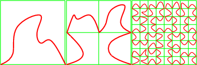
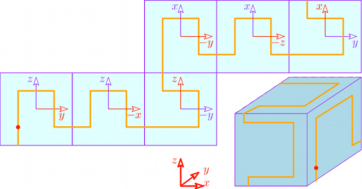

- Authors
- Christophe Delage and Olivier Devillers
Introduction
Many geometric algorithms implemented in CGAL are incremental, and thus their speed is dependent on the order of insertion. This package provides sorting algorithms that may considerably improve running times of such algorithms.
The rationale is to sort objects along a space-filling curve so that two objects close geometrically will be close in the insertion order with high probability. That way, parts of a data structure that will be looked at during an insertion will probably have been looked at in a recent insertion, and thus probably will be in cache memory instead of main memory. As another side-effect, these sorting functions usually improve memory locality of the data structures produced by incremental algorithms, sometimes leading to speed ups in other algorithm using these data structures.
Some algorithms have a good complexity under randomized hypotheses which contradicts the idea of sorting the input using any sorting criterion. In such a case, it is possible to introduce just a bit of randomness to be able to combine the good randomized complexity and the good effects of locality [1].
The predicates used by this package are comparisons between coordinates, thus there is no robustness issue involved here, for example to choose the arithmetic of the kernel.
Hilbert Sorting
In 2D, one can construct a space filling curve, that is a mapping \( f\) of \( [0,1]\) to the unit square \( [0,1]^2\), such that \( f(0)=(0,0)\) and \( f(1)=(1,0)\) in the following way: the unit square is subdivided in four such that
\( f([0,\frac{1}{4}])=[0,\frac{1}{2}]^2\), \( f([\frac{1}{4},\frac{1}{2}])=[0,\frac{1}{2}]\times[\frac{1}{2},1]\), \( f([\frac{1}{2},\frac{3}{4}])=[\frac{1}{2},1]^2\), and \( f([\frac{3}{4},1])=[\frac{1}{2},1]\times[0,\frac{1}{2}].\)
\( f(\frac{1}{4})=(0,\frac{1}{2})\)
\( f(\frac{1}{2})=(\frac{1}{2},\frac{1}{2})\), and \( f(\frac{3}{4})=(1,\frac{1}{2})\).
Then each square is subdivided in the same way recursively. Figure 82.1 illustrates this process.

Now given a set of 2D points, they can be sorted in the order they have on such a space filling curve. Note that at each step, we split a square exactly at its center; we call this subdivision policy: middle policy (see Figure 82.2).
If instead of subdividing the square in a fixed way at its center, as above, we subdivide it by splitting at the median point (in \( x\) or \( y\) directions alternating), we construct a 2-d tree adapted to the point set. This tree can be visited in a similar manner and we get also a suitable ordering of the points; we call this subdivision policy: median policy (see Figure 82.3).
The middle policy is easier to analyze, and is interesting in practice for well distributed set of points in small dimension (if the number of points is really larger than \( 2^d\)). The median policy should be preferred for high dimension or if the point set distribution is not regular (or unknown). Since the median policy cannot be much worse than the middle policy, while the converse can happen, the median policy is the default behavior. Most theoretical results are using the middle policy [1], [2], [3], [4].
CGAL provides Hilbert sorting for points in 2D, 3D and higher dimensions, in the middle and the median policies.
We also consider space filling curves on a given sphere. The method is described for the unit sphere below; it works on any sphere by an affine transformation. The points to be sorted are supposed to be close to the sphere.
Actually, we approximate a space filling curve on the unit sphere by a space filling curve on a cube (with facets at \(x, y, z = \pm 1/\sqrt{3}\)). Roughly speaking, we split the original set of points in six subsets corresponding to the six facets of the cube. The subset corresponding to a facet \(f\) is the set of points that lie in the half-space defined by the supporting plane of \(f\) that does not contain the origin. And then we basically use the 2D Hilbert sort with its corresponding policy, as explained above for the projection of the points in each subset on its corresponding facet of the cube. The axes orientation on each facet is chosen so that the space filling curve covers the whole cube without any jump; see Figure 82.4. A point can lie in more than one such half-plane, so, we give a priority for each facet of the cube. The priority order is: first, the facet of the cube at \(x = 1/\sqrt{3}\); second, the facet of the cube at \(y = 1/\sqrt{3}\); third, the facet of the cube at \( x = -1/\sqrt{3}\); fourth, the facet of the cube at \( z = 1/\sqrt{3}\); fifth, the facet of the cube at \( y = -1/\sqrt{3}\); and, sixth, the facet of the cube at \( z = -1/\sqrt{3}\).
If points are not close to the sphere, they are still sorted the same way, however there is no guarantee that such an order is good anymore.

Points sorted on the sphere according to the description above are depicted in Figure 82.5.
Examples
The code to use Hilbert sort is as simple as the following example:
File Spatial_sorting/hilbert.cpp
#include <CGAL/Exact_predicates_inexact_constructions_kernel.h>
#include <CGAL/point_generators_2.h>
#include <CGAL/hilbert_sort.h>
#include <iostream>
#include <vector>
typedef K::Point_2 Point;
int main ()
{
std::size_t size = 16;
std::vector<Point> v; v.reserve(size);
CGAL::points_on_square_grid_2(3.0, size,
std::back_inserter(v), Creator());
for(std::size_t i=0; i<size; ++i)std::cout<<v[i]<<std::endl;
return 0;
}
The following example shows how to perform a Hilbert sort on a sphere.
File Spatial_sorting/hilbert_sort_on_sphere.cpp
#include <CGAL/Exact_predicates_inexact_constructions_kernel.h>
#include <CGAL/point_generators_3.h>
#include <CGAL/hilbert_sort_on_sphere.h>
#include <iostream>
#include <vector>
typedef K::Point_3 Point;
typedef K::Vector_3 Vector;
typedef K::Sphere_3 Sphere;
int main ()
{
std::size_t size = 32;
CGAL::Random random (42);
std::vector<Point> v;
std::cout << "UNIT SPHERE: " << std::endl;
v.reserve(size);
CGAL::Random_points_on_sphere_3<Point> unit_sphere(1.0, random);
for (std::size_t i = 0; i < size; ++i) v.push_back(*unit_sphere++);
for(std::size_t i=0; i<size; ++i) std::cout << v[i] << std::endl;
v.clear();
std::cout << "GIVEN SPHERE: " << std::endl;
v.reserve(size);
Vector trans = Vector(3,4,5);
CGAL::Random_points_on_sphere_3<Point> given_sphere(2.0, random);
for (std::size_t i = 0; i < size; ++i) v.push_back(*given_sphere++ + trans);
sphere.squared_radius(), sphere.center());
for(std::size_t i=0; i<size; ++i) std::cout << v[i] << std::endl;
return 0;
}
This other example illustrates the use of the two different policies
File Spatial_sorting/hilbert_policies.cpp
#include <CGAL/Exact_predicates_inexact_constructions_kernel.h>
#include <CGAL/hilbert_sort.h>
#include <iostream>
#include <vector>
typedef K::Point_2 Point;
int main ()
{
std::vector<Point> v; v.reserve(4);
v.push_back( Point(0.0,0.0)) ;
v.push_back( Point(1.0,1.0)) ;
v.push_back( Point(0.1,0.1)) ;
v.push_back( Point(0.2,0.8)) ;
std::cout << "Hilbert sort (middle policy)." << std::endl;
std::cout<<v[0]<<"; "<<v[1]<<"; "<<v[2]<<"; "<<v[3]<<"; "<<std::endl;
std::cout << "Hilbert sort (median policy)." << std::endl;
std::cout<<v[0]<<"; "<<v[1]<<"; "<<v[2]<<"; "<<v[3]<<"; "<<std::endl;
return 0;
}
Spatial Sorting
Hilbert sort cannot be used directly before feeding a randomized algorithm. Thus, the trick is to organize the point set in random buckets of increasing sizes, Hilbert sort being used only inside a bucket.
It has been proved, in the context of Delaunay triangulation, that such an order provides enough randomness to combine the advantages of a random order and a space filling curve order [1].
CGAL provides spatial sorting for points in 2D, 3D and higher dimensions, with the middle and the median policies for Hilbert sort in the buckets.
Basic Example
The following example shows that, on particular input, spatial sort runs much faster than a bad order or than Hilbert sort (below results with release mode compilation on a 1.8GHz processor).
$ ./small_example_delaunay_2
10000 points on a parabola
Delaunay without spatial sort... done in 6.33443 seconds.
Delaunay with median hilbert sort... done in 0.822975 seconds.
Delaunay with median spatial sort... done in 0.022415 seconds.
File Spatial_sorting/small_example_delaunay_2.cpp
#include <CGAL/Exact_predicates_inexact_constructions_kernel.h>
#include <CGAL/Delaunay_triangulation_2.h>
#include <CGAL/spatial_sort.h>
#include <CGAL/Timer.h>
#include <iostream>
#include <vector>
typedef CGAL::Delaunay_triangulation_2<K> DT;
void compute_delaunay(std::vector<K::Point_2>::iterator it,
std::vector<K::Point_2>::iterator e){
DT dt;
DT::Face_handle hint;
for( ;it!=e; ++it) hint = dt.insert(*it, hint)->face();
}
int main ()
{ int size = 1000;
std::vector<K::Point_2> v;
v.reserve(size);
CGAL::Timer cost;
std::cout <<size<< " points on a parabola" << std::endl;
for (int i=0; i< size; ++i) {
double x= -size +i;
v.push_back( K::Point_2( x, x*x ));
}
cost.reset();cost.start();
std::cout << " Delaunay without spatial sort... "<< std::flush;
compute_delaunay(v.begin(),v.end());cost.stop();
std::cout << "done in "<<cost.time()<<" seconds." << std::endl;
cost.reset();cost.start();
std::cout << " Delaunay with Hilbert sort... " << std::flush;
compute_delaunay(v.begin(),v.end());cost.stop();
std::cout << "done in "<<cost.time()<<" seconds." << std::endl;
cost.reset();cost.start();
std::cout << " Delaunay with spatial sort... " << std::flush;
compute_delaunay(v.begin(),v.end());cost.stop();
std::cout << "done in "<<cost.time()<<" seconds." << std::endl;
return 0;
}
Spatial sort can be performed on the sphere as well, as shown in the following example.
File Spatial_sorting/spatial_sort_on_sphere.cpp
#include <CGAL/Exact_predicates_inexact_constructions_kernel.h>
#include <CGAL/point_generators_3.h>
#include <CGAL/spatial_sort_on_sphere.h>
#include <iostream>
#include <vector>
typedef K::Point_3 Point;
typedef K::Vector_3 Vector;
typedef K::Sphere_3 Sphere;
int main ()
{
std::size_t size = 32;
CGAL::Random random (42);
std::vector<Point> v;
std::cout << "UNIT SPHERE: " << std::endl;
v.reserve(size);
CGAL::Random_points_on_sphere_3<Point> unit_sphere(1.0, random);
for (std::size_t i = 0; i < size; ++i) v.push_back(*unit_sphere++);
for(std::size_t i=0; i<size; ++i) std::cout << v[i] << std::endl;
v.clear();
std::cout << "GIVEN SPHERE: " << std::endl;
v.reserve(size);
Vector trans = Vector(3,4,5);
CGAL::Random_points_on_sphere_3<Point> given_sphere(2.0, random);
for (std::size_t i = 0; i < size; ++i) v.push_back(*given_sphere++ + trans);
sphere.squared_radius(), sphere.center());
for(std::size_t i=0; i<size; ++i) std::cout << v[i] << std::endl;
return 0;
}
Using Your Own Point Type
If you want to sort points of your own point type, you only have to provide functors that compare the x and y coordinates of your points. Note that in case you simply want to associate an extra information to your point you might consider the example of Section Sorting Using Pairs of Points and Integers as an alternative.
File Spatial_sorting/myPoint.cpp
#include <CGAL/spatial_sort.h>
struct MyPoint {
double x,y;
int color;
MyPoint()
: x(0), y(0),color(0)
{}
MyPoint(double x, double y, int color=0)
: x(x), y(y), color(color)
{}
};
struct MyLessX {
bool operator()(const MyPoint& p, const MyPoint& q) const
{
return p.x < q.x;
}
};
struct MyLessY {
bool operator()(const MyPoint& p, const MyPoint& q) const
{
return p.y < q.y;
}
};
struct MySpatialSortingTraits {
typedef MyPoint Point_2;
typedef MyLessX Less_x_2;
typedef MyLessY Less_y_2;
Less_x_2 less_x_2_object() const
{
return Less_x_2();
}
Less_y_2 less_y_2_object() const
{
return Less_y_2();
}
};
int main()
{
std::vector< MyPoint > points;
points.push_back(MyPoint(14,12, 3));
points.push_back(MyPoint(1,2 , 0));
points.push_back(MyPoint(414,2, 5));
points.push_back(MyPoint(4,21 , 1));
points.push_back(MyPoint(7,74 , 2));
points.push_back(MyPoint(74,4 , 4));
MySpatialSortingTraits sst;
for (std::vector< MyPoint >::iterator it=points.begin();it!=points.end();++it)
std::cout << it->color << " ";
std::cout << "\n";
std::cerr << "done" << std::endl;
return 0;
}
Sorting Arbitrary Types
The spatial sorting traits class provides a point type and functors for comparing, for example, the x-coordinates of two points. If you want to sort something else than just points, for example a sequence of tuples containing a point, or a sequence of indices in a vector of points, you need another level of indirection. We provide the spatial sorting traits class adapters which are templated by another spatial sorting traits class, and a property map. which allows to obtain a point from whatever you want to sort.
The following examples illustrate the usage of these traits class adapters.
Sorting Using Pairs of Points and Integers
In this example program, the sorted sequence of points is retrieved using a vector of pairs of points and integers.
File Spatial_sorting/sp_sort_using_property_map_2.cpp
#include <CGAL/Simple_cartesian.h>
#include <CGAL/spatial_sort.h>
#include <CGAL/Spatial_sort_traits_adapter_2.h>
#include <CGAL/property_map.h>
#include <vector>
typedef std::pair<Point_2,int> Point_with_info;
typedef std::vector< Point_with_info > Data_vector;
CGAL::First_of_pair_property_map<Point_with_info>
> Search_traits_2;
int main()
{
Data_vector points;
points.push_back(std::make_pair(Point_2(14,12) , 3));
points.push_back(std::make_pair(Point_2(1,2) , 0));
points.push_back(std::make_pair(Point_2(414,2) , 5));
points.push_back(std::make_pair(Point_2(4,21) , 1));
points.push_back(std::make_pair(Point_2(7,74) , 2));
points.push_back(std::make_pair(Point_2(74,4) , 4));
Search_traits_2 traits;
for (Data_vector::iterator it=points.begin();it!=points.end();++it)
std::cout << it->second << " ";
std::cout << "\n";
std::cout << "done" << std::endl;
return 0;
}
Sorting Using Indices of Points
In this example program, the sorted sequence of points is retrieved using the indices of the points in a vector of points.
File Spatial_sorting/sp_sort_using_property_map_3.cpp
#include <CGAL/Simple_cartesian.h>
#include <CGAL/spatial_sort.h>
#include <CGAL/Spatial_sort_traits_adapter_3.h>
#include <vector>
#include <CGAL/boost/iterator/counting_iterator.hpp>
CGAL::Pointer_property_map<Point_3>::type > Search_traits_3;
int main()
{
std::vector<Point_3> points;
points.push_back(Point_3(1,3,11));
points.push_back(Point_3(14,34,46));
points.push_back(Point_3(414,34,4));
points.push_back(Point_3(4,2,56));
points.push_back(Point_3(744,4154,43));
points.push_back(Point_3(74,44,1));
std::vector<std::size_t> indices;
indices.reserve(points.size());
std::copy(boost::counting_iterator<std::size_t>(0),
boost::counting_iterator<std::size_t>(points.size()),
std::back_inserter(indices));
indices.end(),
Search_traits_3(CGAL::make_property_map(points)) );
for (std::vector<std::size_t>::iterator it=indices.begin();it!=indices.end();++it)
std::cout << points[*it] << "\n";
std::cout << "done" << std::endl;
return 0;
}
Sorting Using Indices of Pairs of Points and Integers
In this example program, the sorted sequence of points is retrieved using the indices of the points in a vector of pairs of points and integers.
File Spatial_sorting/sp_sort_using_property_map_d.cpp
#include <CGAL/Cartesian_d.h>
#include <CGAL/spatial_sort.h>
#include <CGAL/Spatial_sort_traits_adapter_d.h>
#include <CGAL/boost/iterator/counting_iterator.hpp>
#include <vector>
typedef CGAL::Cartesian_d<double> Kernel;
typedef Kernel::Point_d Point_d;
typedef std::pair<Point_d,int> Point_with_info;
typedef std::vector< Point_with_info > Data_vector;
class Vect_ppmap{
const Data_vector& points;
public:
typedef Data_vector::size_type key_type;
typedef Point_d value_type;
typedef const value_type& reference;
typedef boost::readable_property_map_tag category;
Vect_ppmap(const Data_vector& points_):points(points_){}
friend reference get(const Vect_ppmap& vmap, key_type i) {
return vmap.points[i].first;
}
};
int main()
{
double coords[] ={ 1.0, 1.0, 1.0, 1.0,
2.0, 2.0, 2.0, 2.0 };
Data_vector points;
points.push_back(std::make_pair(Point_d(4,coords ,coords+4) , 1));
points.push_back(std::make_pair(Point_d(4,coords+4,coords+8) , 2));
std::vector<Vect_ppmap::key_type> indices;
indices.reserve(points.size());
std::copy(
boost::counting_iterator<Vect_ppmap::key_type>(0),
boost::counting_iterator<Vect_ppmap::key_type>(points.size()),
std::back_inserter(indices) );
indices.begin(),
indices.end(),
Search_traits_d(Vect_ppmap(points)) );
std::vector<Vect_ppmap::key_type>::iterator it=indices.begin();
for (;it!=indices.end();++it)
std::cout << points[*it].second << " ";
std::cout << std::endl;
std::cout << "done" << std::endl;
return 0;
}
Design and Implementation History
The first implementation of Hilbert and spatial sorting (2D and 3D) in CGAL was done by Cristophe Delage. Then, Olivier Devillers improved its design, and implemented its multidimensional version. Finally, Pedro Machado Manhaes de Castro and Olivier Devillers added Hilbert sorting on the sphere as well.


 1.8.13
1.8.13